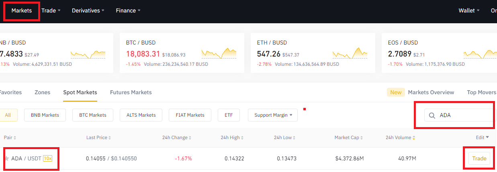
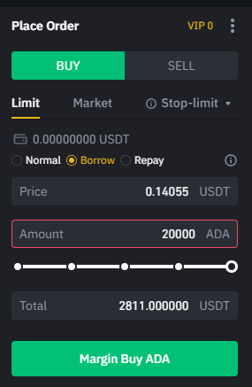

Binance
To be able to purchase ADA you will need to use a crypto exchange.
For this example we will use Binance.com
1. Go to Markets, search for ADA and click Trade.
2. When purchasing ADA I recommend setting a price for best value.
Congratulations you now own ADA!!! Stake it!
Withdraw To Daedalus
1. On Binance click Wallet then Fiat and Spot
Here you will see the purchased ADA you own, click Withdraw

2. Go to your Daedalus app and select receive, click share then copy address.

3. On Binance enter the Daedalus code, ADA amount and Submit.

4. The transaction should take a few minutes and then you are ready to delegate your cardano to begin earning rewards.
SHA☘